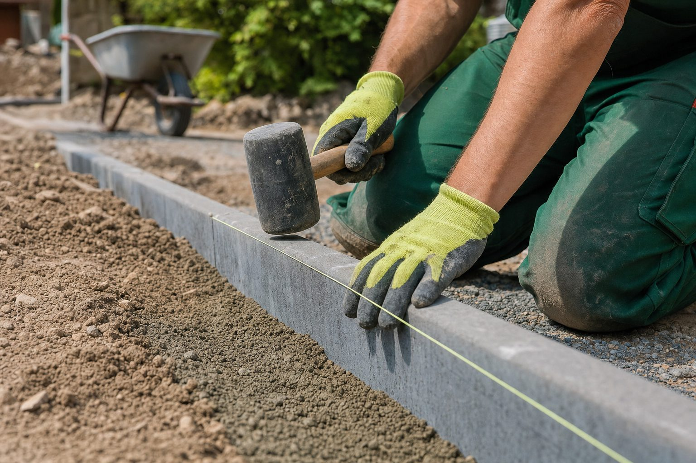

Ecklohn 20,91 Euro: Was der Tarifabschluss ab heute für Betriebe bedeutet
Die zweite Stufe des Tarifabschlusses von IG BAU und BGL ist in Kraft. Löhne und Gehälter steigen um 3,3 Prozent, die Ausbildungsvergütung auf bis zu 1.390 Euro. Für Betriebe sind das Kosten – und Argumente.

- Zweite Stufe des Abschlusses vom 24. Juni 2025: plus 3,3 Prozent ab 1. Juli 2026, Ecklohn (Lohngruppe 4.2a) 20,91 Euro nach 20,24 Euro.
- Ausbildungsvergütung 1.140, 1.270 und 1.390 Euro; über beide Stufen ist der Ecklohn um 1,30 Euro oder rund 6,6 Prozent gestiegen.
- Für eine Vollzeitkraft mit 170 Stunden sind das rund 114 Euro brutto im Monat mehr, zuzüglich Arbeitgeberanteile.
Am 24. Juni 2025 haben sich die Industriegewerkschaft Bauen-Agrar-Umwelt (IG BAU) und der Bundesverband Garten-, Landschafts- und Sportplatzbau (BGL) auf einen zweistufigen Tarifabschluss geeinigt. Die erste Stufe brachte zum 1. Juli 2025 ein Plus von 3,2 Prozent, die zweite tritt heute in Kraft: weitere 3,3 Prozent.
Die Zahlen im Überblick
| bis 30.06.2025 | ab 01.07.2025 | ab 01.07.2026 | |
|---|---|---|---|
| Ecklohn (Lohngruppe 4.2a), je Stunde | 19,61 € | 20,24 € | 20,91 € |
| Ausbildungsvergütung 1. Lehrjahr, je Monat | – | 1.100 € | 1.140 € |
| Ausbildungsvergütung 2. Lehrjahr | – | 1.220 € | 1.270 € |
| Ausbildungsvergütung 3. Lehrjahr | – | 1.340 € | 1.390 € |
Der Ecklohn ist der Stundenlohn der Lohngruppe 4.2a – die Referenzgröße, an der sich die übrigen Lohngruppen orientieren. Über die beiden Stufen ist er um 1,30 Euro gestiegen, das sind rund 6,6 Prozent gegenüber dem Stand vor dem Abschluss.
Was das für die Kalkulation heißt
Bei einer Vollzeitkraft mit rund 170 Stunden im Monat entspricht die zweite Stufe rechnerisch einem Mehrbetrag von etwa 114 Euro brutto je Monat (0,67 Euro je Stunde), zuzüglich Arbeitgeberanteile. Für einen Betrieb mit 22 Beschäftigten – dem Durchschnitt laut BGL-Frühjahrsumfrage – summiert sich die Stufe auf einen mittleren vierstelligen Betrag im Monat, sofern die Belegschaft nahe am Ecklohn bezahlt wird. Wer seine Stundensätze zuletzt vor dem Abschluss kalkuliert hat, sollte sie jetzt prüfen.
Was das im Bewerbergespräch heißt
Viele Stellenanzeigen im GaLaBau nennen keine Zahl. Dabei ist der Tariflohn für Bewerber und Eltern ein verlässlicher Anker: 20,91 Euro pro Stunde für einen ausgelernten Landschaftsgärtner, 1.140 Euro im ersten Lehrjahr. Betriebe, die übertariflich zahlen, verschenken ein Argument, wenn sie es nicht sagen. Betriebe, die tariflich zahlen, gewinnen Vertrauen, wenn sie es transparent machen.
Einordnung
Die Lohnentwicklung im GaLaBau folgt dem Bau: Fachkräfte sind knapp, die Auftragslage stabil. Dass die Ertragslage vieler Betriebe angespannt ist, macht die Tarifstufe nicht leichter. Umgekehrt gilt: Der Lohn ist selten der Grund, warum eine Stelle unbesetzt bleibt – meist ist es die fehlende Sichtbarkeit des Betriebs bei den Fachkräften, die im Umkreis wohnen.
Quellen
- IG BAU: Garten- und Landschaftsbau – Tarifabschluss: mehr Geld für alle (Abschluss vom 24. Juni 2025; Stufen 1. Juli 2025 und 1. Juli 2026; Ecklohn 19,61 / 20,24 / 20,91 Euro; Ausbildungsvergütungen) – igbau.de/Garten-und-Landschaftsbau-Tarifabschluss-mehr-Geld-fuer-alle.html
- B_I galabau: Tariferhöhung 2026 – Mehr Lohn im GaLaBau ab 1. Juli – bau.bi/galabau/nachrichten/tarif-2026-mehr-geld-im-galabau-loehne-ste...
- BGL: Frühjahrsumfrage 2026 (Durchschnitt 22 Beschäftigte je Betrieb), zitiert nach B_I galabau, 28. Mai 2026 – bau.bi/galabau/nachrichten/fruehjahrsumfrage-2026-darum-trotzt-der-ga...
- Rechenbeispiele: eigene Berechnung (0,67 € × 170 Stunden; 1,30 € / 19,61 €)
Kommentare
Noch keine Kommentare. Schreiben Sie den ersten.
Muss ich die Fahrzeit zur Baustelle bezahlen?
Die Fahrt vom Betrieb zur Baustelle und zurück ist Arbeitszeit, für Fahrer wie Mitfahrer, und grundsätzlich zu vergüten. Tarifverträge können die Vergütung pauschalieren oder anders regeln; tarifgebundene Betriebe wenden den Rahmentarifvertrag an. Der Weg von der Wohnung zum Betrieb ist keine Arbeitszeit.
Darf der Chef Überstunden anordnen?
Nicht ohne Weiteres. Überstunden kann der Betrieb anordnen, wenn Arbeitsvertrag, Tarifvertrag oder Betriebsvereinbarung das vorsehen; ohne solche Regelung nur in echten Notfällen. Die Grenze bleibt das Arbeitszeitgesetz: höchstens zehn Stunden am Tag, im Schnitt acht über sechs Monate. Ob Überstunden bezahlt oder mit Freizeit ausgeglichen werden, steht ebenfalls im Vertrag oder Tarif.
Azubi-Mindestvergütung 2026: 724 Euro – und warum der GaLaBau davon weit entfernt ist
Das Bundesbildungsministerium hat die Mindestausbildungsvergütung für 2026 bekannt gegeben. Für Betriebe im Tarif spielt sie keine Rolle, für nicht tarifgebundene Betriebe gilt eine andere Grenze – und die liegt deutlich höher.